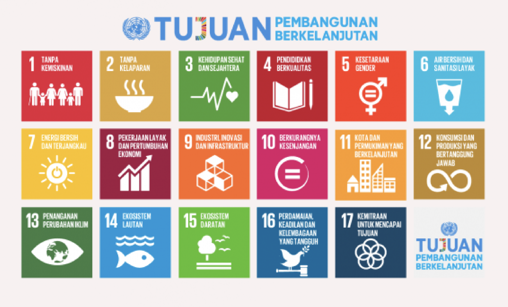

1. Tanpa Kemiskinan (No Poverty)
Mengakhiri kemiskinan dalam segala bentuk dan dimensinya di mana pun, memastikan setiap orang memiliki standar hidup yang layak.
1313623043

Mengakhiri kemiskinan dalam segala bentuk dan dimensinya di mana pun, memastikan setiap orang memiliki standar hidup yang layak.
Menjamin akses yang adil dan berkelanjutan terhadap makanan, serta mendukung pertanian berkelanjutan untuk meningkatkan produksi pangan.
Menjamin akses yang adil dan berkelanjutan terhadap layanan kesehatan, serta mendukung upaya pencegahan dan pengobatan penyakit.
Menjamin akses yang adil dan berkelanjutan terhadap pendidikan, serta meningkatkan kualitas pendidikan di seluruh dunia.
Menjamin kesetaraan gender dan menghapus diskriminasi terhadap semua orang, tanpa memandang jenis kelamin.
Menjamin akses yang adil dan berkelanjutan terhadap air bersih dan sanitasi yang layak, serta meningkatkan kualitas air dan sanitasi di seluruh dunia.
Menjamin akses yang adil dan berkelanjutan terhadap energi bersih dan terjangkau, serta mendukung inovasi dan teknologi energi yang berkelanjutan.
Menjamin pekerjaan yang layak dan pertumbuhan ekonomi yang berkelanjutan, serta meningkatkan produktivitas dan keterlibatan dalam ekonomi global.
Mendukung pembangunan infrastruktur yang kuat dan inovasi teknologi untuk mendorong pertumbuhan ekonomi yang berkelanjutan.
Mengurangi ketimpangan pendapatan dan kesenjangan lainnya di dalam dan di antara negara-negara.
Menjamin akses yang adil dan berkelanjutan terhadap layanan dasar, serta mendukung pembangunan kota dan permukiman yang berkelanjutan.
Mendukung konsumsi dan produksi yang bertanggung jawab, serta mengurangi dampak lingkungan dari aktivitas manusia.
Mengambil tindakan mendesak untuk memerangi perubahan iklim dan dampaknya dengan mengatur emisi dan mempromosikan energi terbarukan.
Melestarikan dan menggunakan samudra, laut, dan sumber daya kelautan secara berkelanjutan untuk pembangunan berkelanjutan.
Melindungi, memulihkan, dan mempromosikan penggunaan ekosistem darat yang berkelanjutan, mengelola hutan secara berkelanjutan, memerangi penggurunan, dan menghentikan hilangnya keanekaragaman hayati.
Mempromosikan masyarakat yang damai dan inklusif, menyediakan akses keadilan bagi semua, serta membangun institusi yang efektif, akuntabel, dan inklusif di semua tingkatan.
Memperkuat sarana pelaksanaan dan merevitalisasi kemitraan global untuk pembangunan berkelanjutan antara pemerintah, sektor swasta, dan masyarakat sipil.
Tujuan 7 dari SDGs menargetkan akses universal terhadap energi yang terjangkau, andal, dan modern pada tahun 2030. Di Indonesia, kebutuhan energi terus meningkat seiring pertumbuhan penduduk, namun ketergantungan pada energi fosil (minyak bumi, batubara, dan gas alam) masih sangat tinggi. Penggunaan energi fosil ini tidak hanya mengancam ketahanan energi karena cadangan yang menipis, tetapi juga memicu kerusakan ekosistem dan perubahan iklim. Transisi menuju energi baru terbarukan (EBT) seperti panas bumi, tenaga air, tenaga surya, dan bioenergi menjadi krusial. Selain menjaga kelestarian lingkungan, pemanfaatan energi bersih merupakan syarat mutlak untuk menciptakan pertumbuhan ekonomi yang inklusif, meningkatkan kesehatan masyarakat, serta mendukung pemerataan akses energi bagi wilayah tertinggal, terdepan, dan terluar (3T).
Platform edukasi energi "Eco-Alert" dapat diakses secara instan via browser tanpa instalasi aplikasi, mempercepat distribusi panduan keselamatan di lapangan.
Penyelesaian masalah dan penindakan potensi bahaya fisik di lapangan masih sangat bergantung pada kecepatan respons otoritas lokal terkait.
Pemanfaatan integrasi teknologi pemindaian QR Code di area instalasi energi untuk skrining pemahaman keselamatan warga secara kilat.
Stigma negatif dan ketakutan masyarakat yang berlebihan terhadap energi non-konvensional (nuklir/hidrogen) membuat mereka enggan membuka platform.